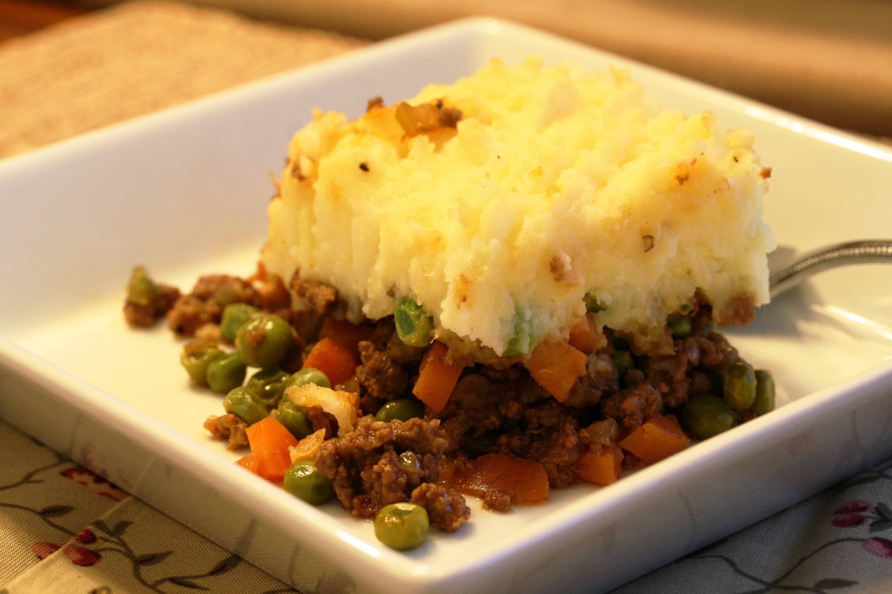

Cottage Pie

Description
A simple meal consiting of ground beef
Ingredients
- mashed potatoes flakes
- 1 pound ground beef
- 1 package frozen peas and carrots
- 1 package frozen corn
- garlic powder
- butter/li>
- milk
- shredded chedder cheese
Steps
- Gather all ingredients.
- Sauté ground beef in a large skillet over medium heat and add garlic powder to taste, until browned and crumbly; 5 to 10 minutes.
- Meanwhile, make the mashed potatoes according to the package instructions.
- Dump the contets of the frying pan, including the grease, into an casserole pan. Spread out so that you have an even layer of ground beef.
- Preheat the oven to 350 degrees.
- Layer the frozen carrots, peas and corn.
- Layer the mashed potatoes over the frozen vegtables.
- Slice half a stick of butter into thin squares and distribute evenly over the top of the mashed potatoes.
- Cover the top with a layer of shredded cheese.
- Bake for 15 to 20 minutes.
- Let sit for 5-10 minutes, then serve and enjoy!